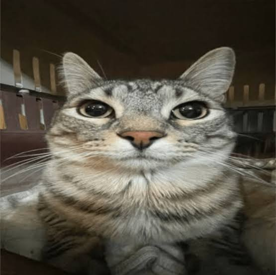

Khezon's Creatives

Crafting Ideas Into Reality
At Khezon's Creatives, we envision a world where feline care seamlessly blends into the modern lifestyle. Our goal is to create a holistic ecosystem that respects a cat’s natural instincts while elevating contemporary home design, setting a new global standard for feline comfort, curiosity, and vitality.
Driven by discovery, we pioneer smart solutions that redefine daily cat care by merging cutting-edge technology with veterinary science. From intuitive nutrition systems to proactive health tools, we anticipate the needs of modern pet parents to make comprehensive wellness effortless and precise.
Innovation for us means replacing mass-market standards with sustainable, premium craftsmanship. We use eco-certified materials to build modular furniture and enrichment toys that complement sophisticated spaces, offering unparalleled style and longevity for discerning cat lovers.